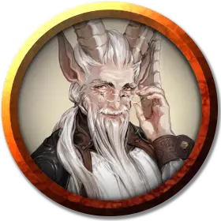

Виллифорт Кровелл
Willifort Crowelle
Средний Монстр (Перевертыш), нейтральный, именной НИП

Класс Доспеха 14
Хиты 52 (8к8 + 16)
Скорость 30 футов
| мод | спас | ||
|---|---|---|---|
| СИЛ | 11 | +0 | +0 |
| ЛОВ | 18 | +4 | +4 |
| ТЕЛ | 14 | +2 | +2 |
| мод | спас | ||
|---|---|---|---|
| ИНТ | 11 | +0 | +0 |
| МДР | 12 | +1 | +1 |
| ХАР | 14 | +2 | +2 |
Навыки Обман +6, Проницательность +3
Иммунитет к состояниям очарование
Чувства тёмное зрение 60 футов, пассивное Восприятие 11
Языки Общий
Опасность 3 (700 опыта)
Бонус мастерства +2
Особенности
Перевертыш. Виллифорт может действием принять облик любого Маленького или Среднего гуманоида, которого он когда-либо видел, или свой естественный облик. Его характеристики, кроме размера, одинаковы в любом облике. Его снаряжение не трансформируется. Будучи убитым, доппельгангер принимает свой естественный облик.
Мастер устраивать засады. Виллифорт совершает с преимуществом броски атаки по всем существам, которых он застал врасплох.
Внезапная атака. Если доппельгангер застает врасплох существо и попадает по нему атакой в первом раунде сражения, цель получает от атаки дополнительный урон 10 (3к6).
Действия
Мультиатака. Виллифорт совершает две рукопашные атаки.
Размашистый удар. Рукопашная атака оружием: +6 к попаданию, досягаемость 5 футов, одна цель. Попадание: Дробящий урон 7 (1к6 + 4).
Чтение мыслей. Виллифорт читает с помощью магии поверхностные мысли одного существа в пределах 60 футов от него. Эффект может проникать через препятствия, но 3 фута древесины или грунта, 2 фута камня, 2 дюйма металла или тонкий лист свинца блокируют его. Пока цель находится в пределах дистанции, Виллифорт может продолжать чтение мыслей, при условии, что концентрация Виллифорта не прерывается. Читая мысли цели, доппельгангер совершает с преимуществом проверки Мудрости (Проницательность) и Харизмы (Запугивание, Обман и Убеждение) против цели.